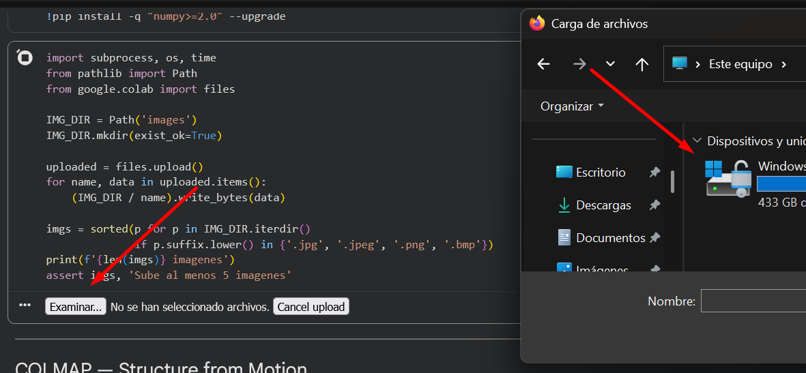
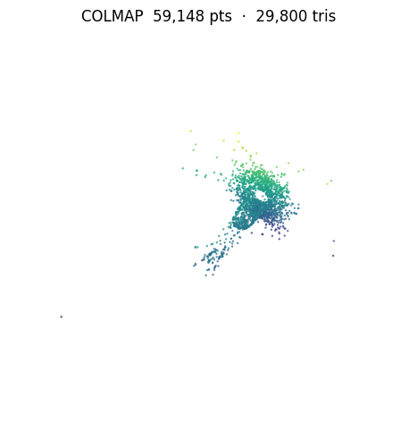
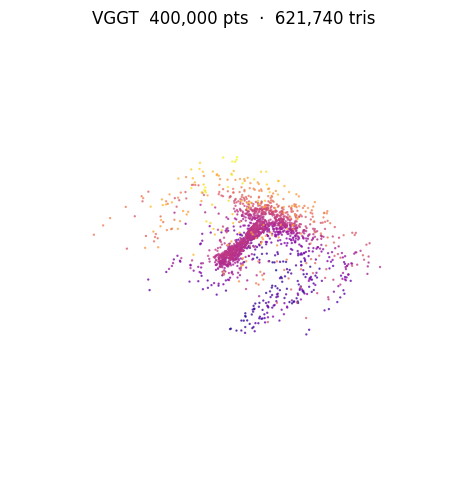
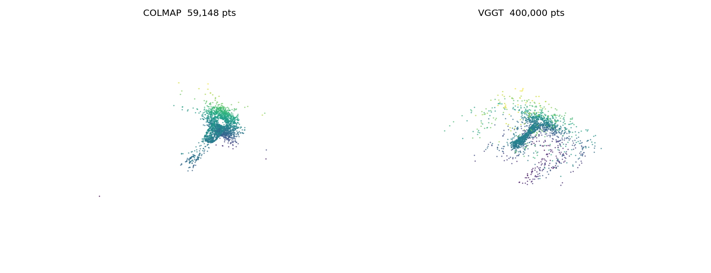

Ej. 8 — Reconstrucción 3D: COLMAP vs VGGT¶
Parámetros clave¶
| Parámetro | Valor | Descripción |
|---|---|---|
CONF_THRESH |
0.5 | Umbral de confianza de VGGT para filtrar puntos ruidosos |
MAX_PTS |
400 000 | Máximo de puntos antes de Poisson (evita OOM en T4) |
Poisson depth COLMAP |
8 | Resolución del árbol octante (nube sparse) |
Poisson depth VGGT |
9 | Resolución del árbol octante (nube densa) |
| Density quantile COLMAP | 0.15 | Corte inferior de densidad Poisson (elimina artefactos de borde) |
| Density quantile VGGT | 0.10 | Corte inferior de densidad Poisson |
std_ratio (outlier removal) |
2.0 | Umbral estadístico para eliminar puntos aislados |
Parámetro más sensible: CONF_THRESH
Bajar CONF_THRESH de 0.5 a 0.3 incluye más puntos pero anade ruido de fondo. Subirlo a 0.7 da nubes más limpias pero puede dejar huecos en zonas de baja confianza (bordes, reflejos).
Flujo de trabajo en Colab¶

Cómo fotografiar el objeto
- Dar una vuelta completa al objeto en pasos de ~10°, manteniendo distancia constante.
- Incluir vistas desde arriba (45°) y desde abajo (45°) para cubrir los polos.
- Fondo neutro y uniforme. Evitar superficies completamente lisas y reflectantes (COLMAP necesita textura para detectar keypoints SIFT).
- Mínimo de 5 fotos, recomendado 40-50 para Poisson de calidad.
Pipeline COLMAP¶

La reconstrucción densa (patch_match_stereo) está desactivada porque el binario de COLMAP de apt en Colab no tiene soporte CUDA. Se usa reconstrucción sparse seguida de malla Poisson con depth=8.
Pipeline VGGT¶

Malla Poisson (común a ambos)¶
Comparativa COLMAP vs VGGT¶

| Métrica | COLMAP | VGGT |
|---|---|---|
| Tiempo total en T4 (s) | — | — |
| Tiempo extracción + matching (s) | — | — |
| Tiempo inferencia / mapper (s) | — | — |
| Tiempo Poisson (s) | — | — |
| Cámaras registradas / total | — / — | — / — |
| Puntos 3D tras filtrado | — | — |
| Triángulos en malla final | — | — |
| Reconstrucción densa | No (sparse + Poisson) | Siempre |
Tabla pendiente de rellenar
Ejecutar reconstruct_colab.ipynb en Colab T4 con el objeto definitivo e introducir aquí los valores impresos por la celda de comparativa.

Decisiones de diseno¶
COLMAP sin reconstrucción densa¶
El binario de COLMAP disponible en apt de Colab no tiene CUDA habilitado en patch_match_stereo. En lugar de forzar una compilación desde fuente (que anadiría 20-30 min al proceso), se usa la nube sparse como entrada a Poisson, obteniendo una malla cerrada con calidad suficiente para visualización.
VGGT con umbral de confianza adaptable¶
VGGT devuelve world_points_conf para cada punto. Usar conf > 0.5 descarta puntos en zonas de fondo y oclusiones donde el modelo no está seguro, reduciendo el ruido en la malla final. El subsampling a 400 k puntos evita OOM al construir la malla Poisson en GPU T4.
Limitaciones¶
Limitaciones conocidas
- COLMAP falla con objetos de superficies lisas o poco texturadas (no se detectan suficientes keypoints SIFT). VGGT es más robusto en estos casos al no depender de matches locales.
- La malla Poisson a partir de nube sparse de COLMAP puede tener agujeros en zonas con pocos puntos.
- VGGT puede dar OOM en T4 con más de ~40 imágenes de alta resolución; se recomienda redimensionar a 1024 px máximo antes de subir.
- Los
.objexportados por Open3D no incluyen texturas; el modelo AR es solo geometría (wireframe).